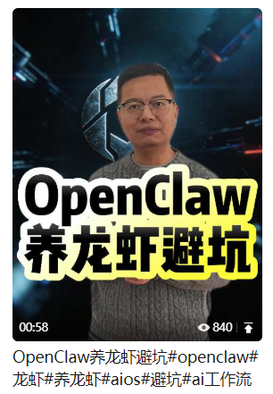
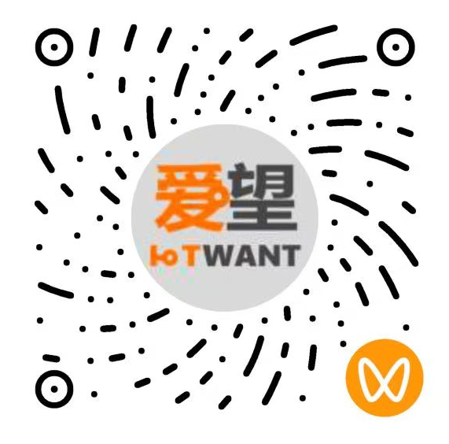
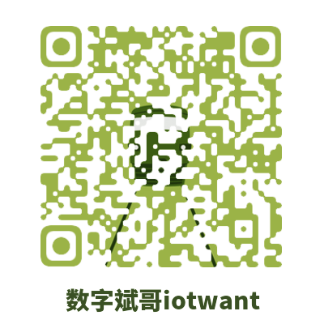

数字斌哥在AI领域拥有丰富的实战经验，为企业提供全方位的AI解决方案，助力企业数字化转型
为企业提供AI战略规划、技术路线图设计、落地实施方案，帮助企业制定符合自身发展的AI转型策略
结合5G、物联网、工业互联网等技术，为企业提供AI技术落地服务，包括模型训练、部署和集成
为企业提供AI人才培训，包括技术培训、思维训练和实战演练，帮助企业构建AI人才队伍
AI驱动的智能工厂解决方案
AI+物联网的智慧农业方案
AI赋能的个性化教育解决方案
AI辅助诊断与医疗管理方案
AI驱动的智能交通解决方案
AI+元宇宙的创新应用方案
数字斌哥对AI、数字化转型等领域的深度见解

探讨AI技术在战争与和平中的应用与影响，以及如何利用AI促进世界和平
解析具身智能的发展现状与未来趋势，以及其在各个领域的应用前景
利用AI技术帮助个人发现潜能，实现职业规划与梦想追求
探讨AI技术在军工领域的应用，以及如何平衡技术发展与安全考量
利用AI技术提升社区安全与管理效率，构建智慧社区
分析海南封关对数字经济的影响，以及AI技术在自贸区建设中的应用
探讨AI技术如何与传统文化结合，以及人工智能对人类文明的影响
探讨AI时代人力资源管理的变革，以及如何实现个人成功与幸福
解析AI与物联网的融合发展，以及其对产业数字化转型的推动作用
无论您是需要AI方案咨询、企业数字化转型辅导，还是希望了解更多关于数字斌哥的课程与服务，都可以通过以下方式联系我们

